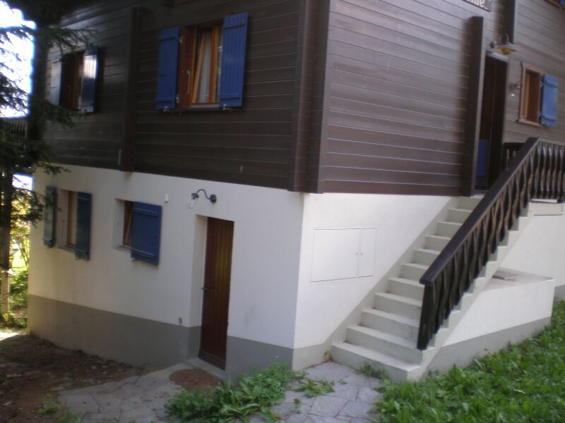

Omgeving
Over Bellwald
Bellwald ligt in kanton Wallis en maakt deel uit van het district Goms. Het dorp is ingesteld op vakantiegangers en heeft uitgebreide faciliteiten voor zowel skiën en snowboarden als voor wandelen.
Bezoek bellwald.chInfo
Het huis heet "Ich saz uf eime Steine" en ligt in het dorp Bellwald.
Normaal in gebruik als familie vakantiehuis, daarnaast voor verhuur beschikbaar. Er is plek voor maximaal 8 personen.
Charmant, ruim familiechalet, op loopafstand — ca. 150 meter — van de piste en de stoeltjeslift. Eigen parkeerplaatsen (2) voor de deur. Breed balkon, grote tuin omzoomd door lariksen, prachtig uitzicht.
Mooie leefruimte met open haard en hoge ramen. Recente keuken met inductiekookplaat, oven/magnetron en vaatwasser. Skiruimte met wasmachine en droger.
Voor alle vragen mail ons: bellwaldchalet@gmail.com.

Omgeving
Bellwald ligt in kanton Wallis en maakt deel uit van het district Goms. Het dorp is ingesteld op vakantiegangers en heeft uitgebreide faciliteiten voor zowel skiën en snowboarden als voor wandelen.
Bezoek bellwald.chBlijf op de hoogte
Live beelden uit het dorp en filmpjes over Bellwald in zomer en winter.